Latest Before / After films
Real production Canvas captures from the latest review work. Each film labels the change, includes very quiet ambience, and has a direct MP4 download. The earlier review-film provenance, composer popover provenance, consent scope provenance, model profile provenance, destructive-button provenance, launch feedback provenance, validation tint provenance, and device authorization provenance keep the exact source heads, backend versions, and coverage limits alongside the media.
Readable Markdown links
#18530 addresses issue #18522. This corrected film compares base 8238b7af82 with a0818714a2. An added composite-surface check exposed faint links inside supported alerts; both light-theme link roles now cover those surfaces too. One hundred forty captures record ordinary user-chat content, all five alert styles, and a real file-backed plan across five themes and desktop/phone, with normal and hover measurements.
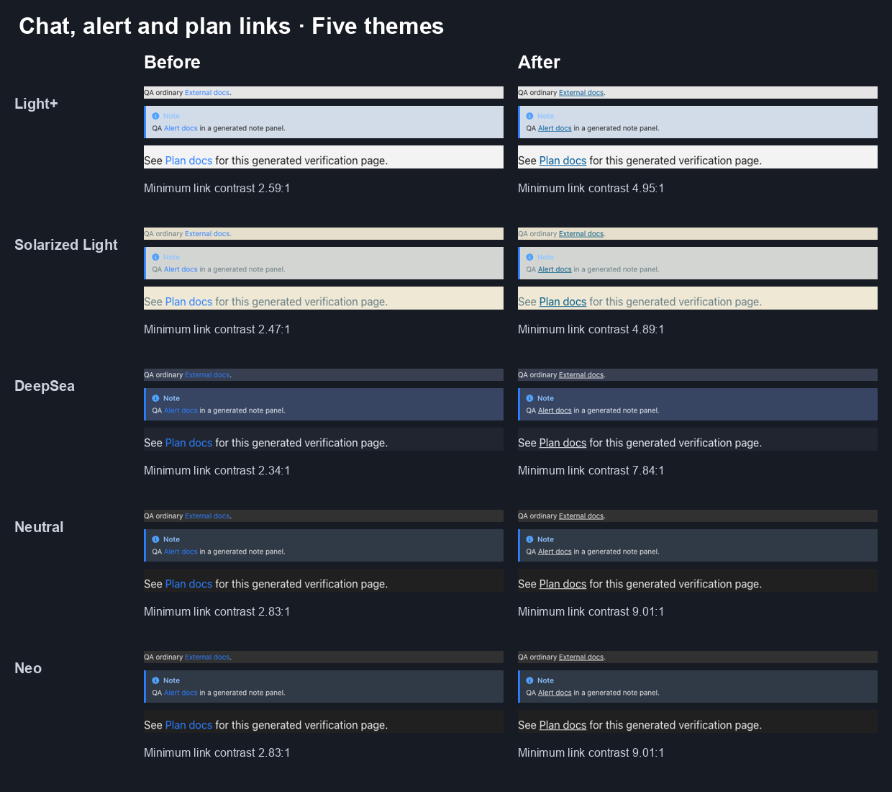
The recording source preserves 140 records with 280 normal/hover measurements, exact heads, inspected component crops, hashes and the supported-runtime fixture. A silent twenty-four-second GIF is available. Sixty-four focused tests and full local lint pass at the corrected head; remote CI and readiness are recorded separately in the dated snapshot. The fixture uses only generated QA content and a failing loopback model endpoint, with no external model access or tool actions.

Clear chat status
#18531 addresses issue #18523 at 5b8ed56a6d, compared with base 8238b7af82. Forty captures cover five themes and desktop/phone. The changed history label reaches at least 4.98:1; the clock reaches at least 6.10:1. Actual pagination resumes from ten to twenty generated user messages, and a real bounded command produces the timeout.
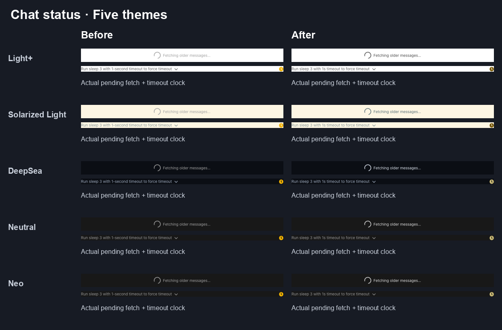
The recording source preserves exact heads, forty scoped measurements, source frame ranges and hashes, without conversation identifiers or private paths. A silent sixteen-second GIF is available. Forty focused tests pass with one pre-existing todo; full local lint reports zero errors and 666 warnings at this independent proposal head.

Readable model saves
Merged #18529 addresses issue #18516. The actual component evidence compares 8238b7af82 with b685ae43ae. Forty captures cover five themes, desktop and phone, a real partial save at the fifty-profile limit, and a generated matching provider connection. Changed normal text reaches at least 4.85:1. The save produces one actual 201 and two 409 responses; no real credential or model call is used.
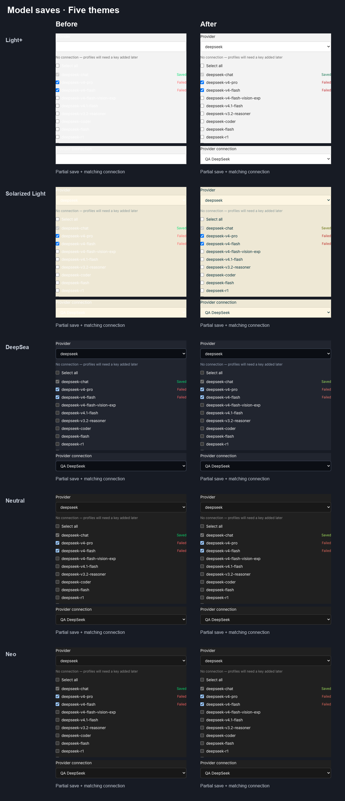
The recording source preserves exact heads, measurements, frame selection, hashes and coverage limits. A silent eight-second GIF is also available. 35 existing focused tests and local lint/build checks pass; readiness and remote CI belong to the dated snapshot.

Theme-matched file chooser
Merged #18532 addresses issue #18518. The actual component evidence compares 8238b7af82 with 7d7222b157. Forty captures cover five themes, desktop and phone, normal state and real Tab/ShiftTab focus. Native button text reaches at least 7.58:1. Actual missing-file validation, a generated tarball selection, and navigation to Review still work; no automation is created or dispatched.
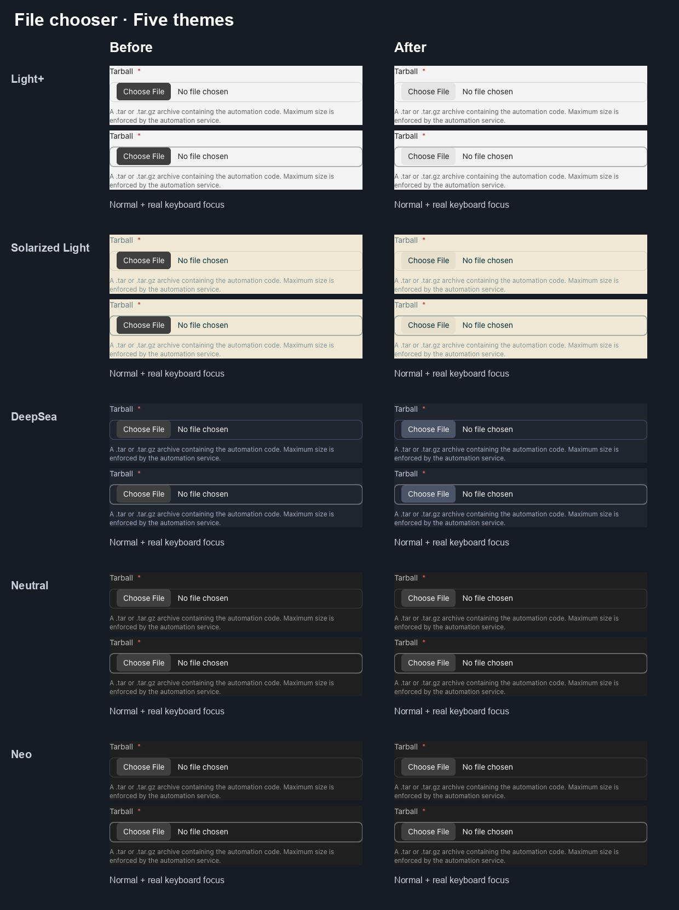
The recording source preserves exact heads, measurements, frame selection, hashes and coverage limits. A silent eight-second GIF is also available. 23 existing focused tests and local lint/build checks pass; readiness and remote CI belong to the dated snapshot.

Readable hook diagnostics
Merged #18534 addresses issue #18521. The actual component evidence compares 8238b7af82 with a0fe71bea3. Sixty captures cover five themes, desktop and phone, real stderr, timeout and deny outcomes. Scoped text minima after the change are 4.77:1 for badges, 6.10:1 for blocked reasons, 5.59:1 for errors and 5.49:1 for stderr. Hooks stop the fixture before any model invocation.
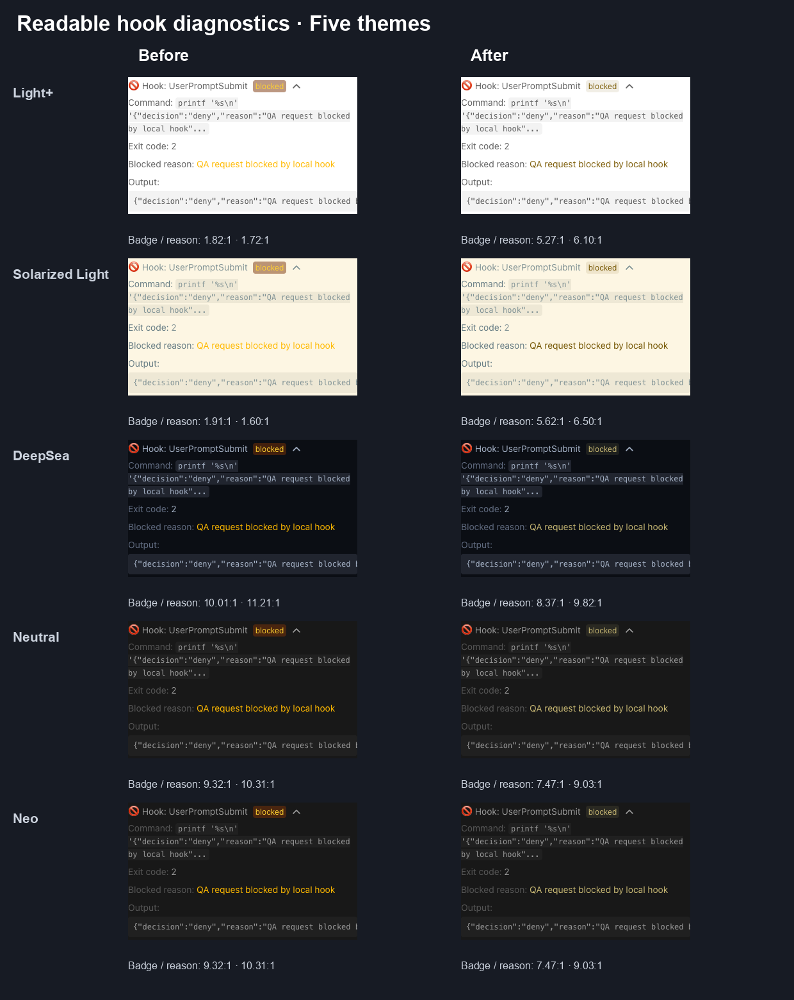
The recording source preserves exact heads, measurements, frame selection, hashes and coverage limits. A silent eight-second GIF is also available. 26 existing focused tests and local lint/build checks pass; readiness and remote CI belong to the dated snapshot.

Readable built-in critic score
Merged #18535 addresses issue #18524. The actual component evidence compares 8238b7af82 with 3e0b09078a. Twenty captures cover five themes, desktop and phone, with an actual supported DeepSeek agent, FinishTool and built-in AgentFinishedCritic result. Scoped heading, percentage and hint text reaches at least 4.98:1, and stars 5.59:1. No scored event or classification response is fabricated.
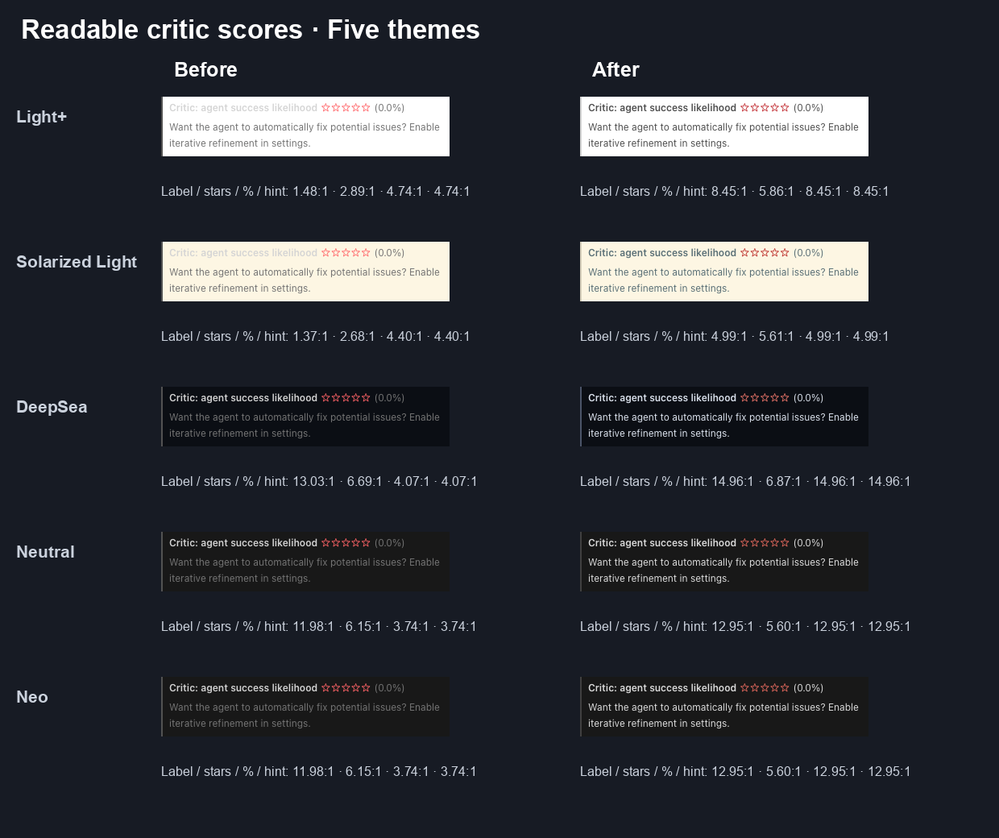
The recording source preserves exact heads, measurements, frame selection, hashes and coverage limits. A silent eight-second GIF is also available. 26 existing focused tests and local lint/build checks pass; readiness and remote CI belong to the dated snapshot.

Device authorization: readable safety instructions and real errors
Merged #18528 addresses bug #18527 across device-flow and verification feedback. The film compares 8238b7af82 with bd30e4c7df. It uses the visibly invalid QA-NOT-REAL placeholder, actual local failure requests, and anonymous waiting/cancel checks. No issued code was authorized, no persistent key or backend was saved, and no model turn occurred during these auth captures.
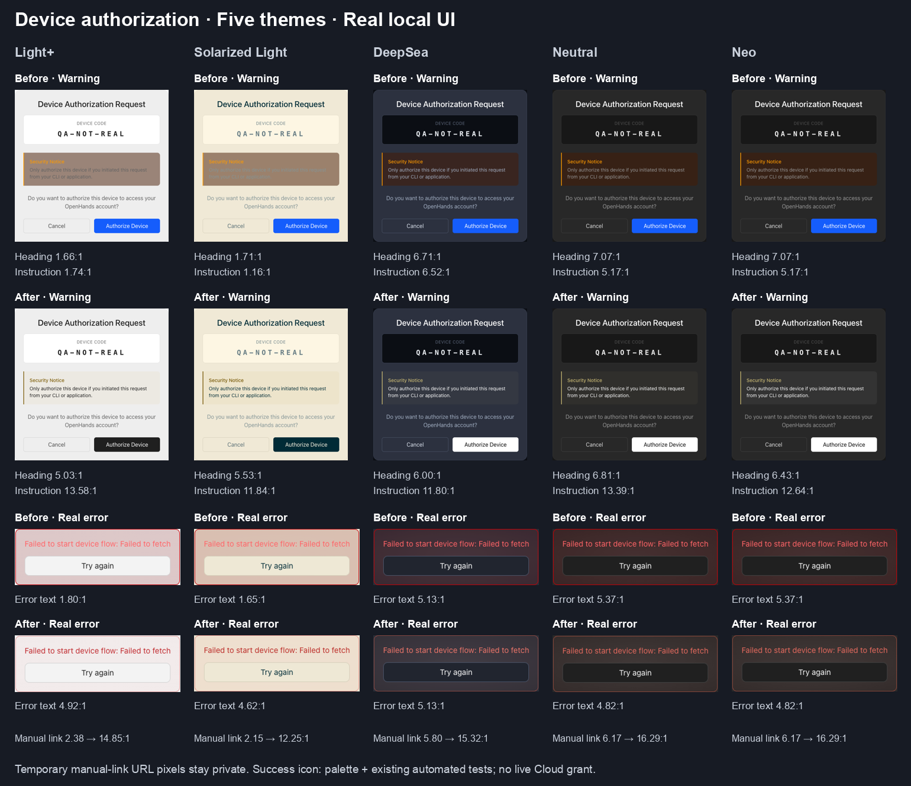
The recording source preserves exact heads, measurements, source selection, hashes, and functional retry/cancel checks. Retry issued a real additional request, and invalid-code retry returned to review. The success icon has separate existing automated behavior and static palette proof; successful Cloud authorization was not exercised. Unchanged muted paragraphs, result titles and other buttons are outside the changed-text claim. A silent 16-second GIF is available.

Automation validation: error decoration follows the theme
Merged #18526 addresses bug #18519 with three raw-color replacements. The film compares 8238b7af82 with 2487541846. A generated invalid-cron draft triggers actual server validation and the Test guard in an isolated Local stack, without a model call or automation dispatch. Only the target alert and generated QA diagnostics appear.
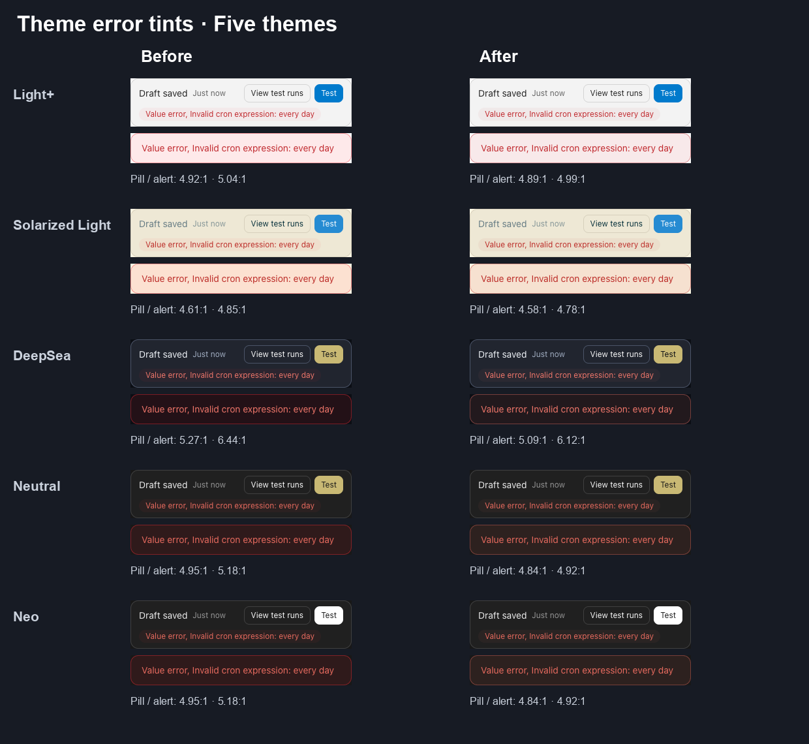
The recording source preserves exact heads, source crops, every measurement, asset hashes, and checks that invalid drafts save without dispatch. Sixty-two focused tests, app/library builds, and the independent head's lint/typecheck pass with zero errors and 665 warnings. A silent eight-second GIF is available. Other controls, success decoration, and Cloud integration are outside this batch.

Launch errors: readable feedback and a themed retry
Merged #18515 addresses bug #18514 by replacing three raw-color classes in launch feedback. The film compares 8238b7af82 with 6e1abb6408. The isolated Local Agent Server was stopped before Start using generated inert metadata, so the real creation request failed before any source installation or model execution. Published pixels show only the generic error card; no local source path or user content appears.
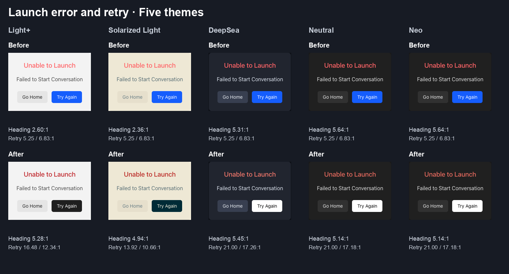
The recording source preserves exact heads, measurements, media hashes and limits. Missing-source handling, Try Again returning to review with trust cleared, disabled Start until fresh trust, and Go Home navigation were verified. A silent 12-second GIF is available. Successful external installation, Cloud/ACP authorization, and model turns are outside this evidence.

Destructive buttons: readable Uninstall and theme-aware Delete
Merged #18513 addresses bug #18512 by replacing four raw-color classes in the shared BrandButton destructive variants. The film compares 8238b7af82 with f52f2f7b29. It shows only the generated test profile's delete confirmation and the disabled built-in demo app's footer, on an isolated Local Agent Server 1.55.1. No user data, account content, credential value, or model turn is included.
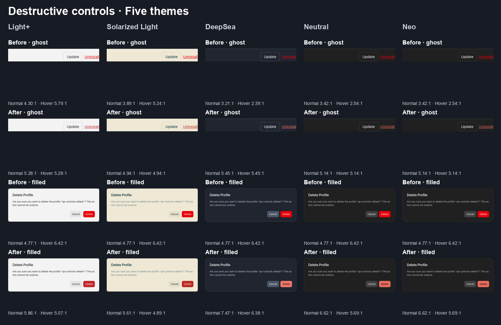
The recording source preserves exact heads, crops, measurements, functional fixture checks, media hashes, and limits. Deleting the disposable inactive profile and uninstalling the disposable disabled demo app both passed through the real UI. A silent 16-second GIF is available. Other variants, Cloud/ACP execution, and DigitalOcean setup are outside this evidence.

Model profiles: readable names and details
#18510 is merged and addresses bug #18509. The film compares main 3419bdb4f7 with proposed head e71b4499fa using real production Canvas and Agent Server 1.55.1. It shows only the model-message component with generated qa-alpha/qa-beta fixtures and a synthetic loopback endpoint. The key field shows presence only; no credential value or user conversation content is visible. The idle backend recorded no model turn or usage.
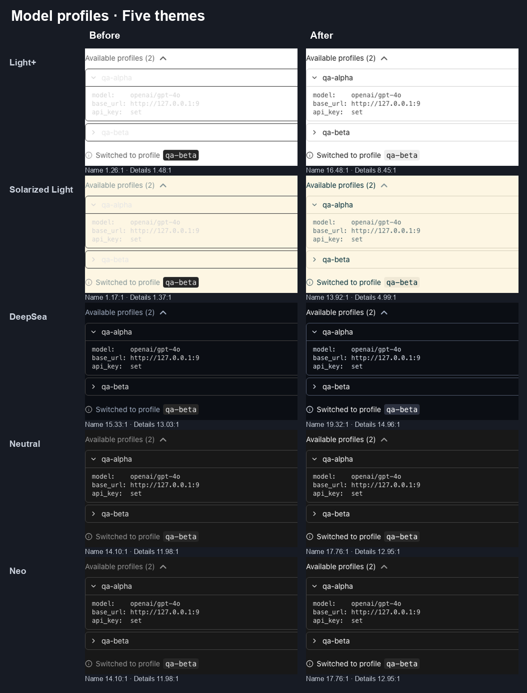
The recording source preserves exact heads, source crops, 40 settled captures, idle/no-model-run evidence, media hashes, and coverage limits. The Light+ hover comparison shows the fixed dark gray becoming a theme-aware hover. An eight-second inline GIF is also available.


The empty-profile hint was not manually reached because the normal setup gate disables the composer without a configured profile. The shared message title and outer chevron are unchanged. Phone checks use a phone-sized viewport; hover is pointer inspection, and no Cloud/ACP execution or model response is claimed.
Consent: readable backend scope
Merged #18508 addresses bug #18507 with one color-class replacement on the backend-scope line. The film compares 0c7c2258a8 with dd4987f1d5 using real production Canvas and Agent Server 1.55.1. It shows only the consent form and a generated Local loopback backend; no model call or credential was needed. The recording source preserves the capture crops, 20 desktop/phone measurements, checks, and media hashes.
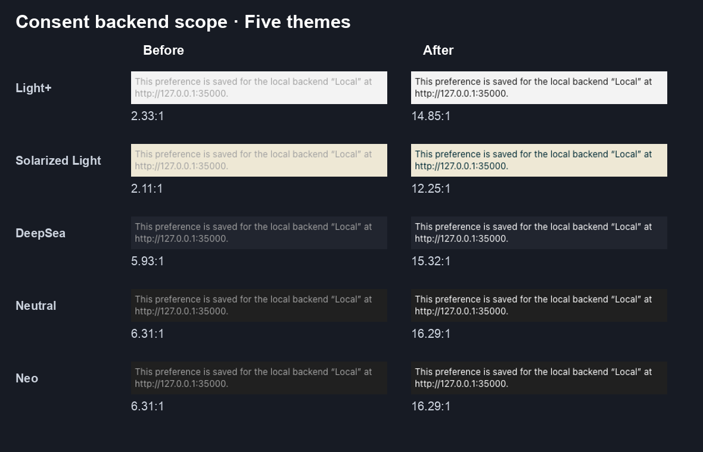
Unchecking consent, confirming, and reloading still saves the backend preference as false and keeps the dialog closed. All inspected forms fit their viewport without horizontal page overflow. The change is limited to the backend-scope line; other description colors and Cloud/ACP workflows are outside this batch. An eight-second inline GIF is also available.

Composer context: readable warning and danger
#18504 merged on 16 October and addresses bug #18505. The film compares 0c7c2258a8 with 8189e21472 using production Canvas, real Agent Server 1.55.1, and DeepSeek Flash. Supported context budgets produce genuine warning and danger states; no tools ran. Only the popover and blank composer controls are shown. The recording source preserves the source crops, configured budgets, 60 desktop/phone measurements, and media hashes.
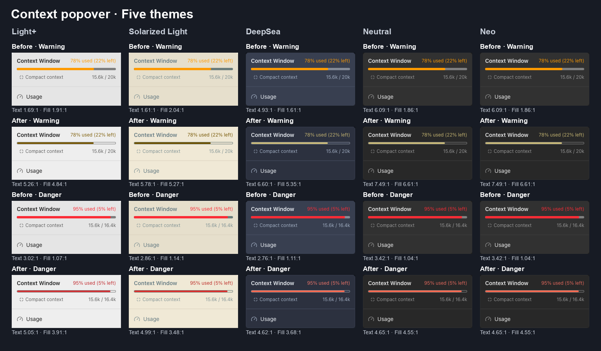
The scope is warning/danger feedback and bar contrast. Existing muted Solarized text and the phone popover's 2 px left-edge clip are unchanged; neither is claimed as fixed. Phone Usage navigation was observed but remains unverified; no baseline comparison was made. Live model/backend coverage is Local Agent Server and DeepSeek. The PR merged at 08:08 Stockholm time on 16 October. An inline GIF version is also available.

Providers: visible keyboard focus
The recorded #18327 head 8c8573b188 includes this third focus control; the PR merged on 16 October. The Agent-server tab and guidance toggle were also checked on that head in both light palettes; the Providers card fits at phone width. Baseline cb835dd328, real Agent Server 1.55.0. The legacy drawer's scrim remains compiled-CSS evidence in the earlier film below; the current Canvas uses the settings hub.
Context usage: readable warnings
5b060141aa head of #18431; the final DeepSea correction is shown separately below.The warning and danger states come from real model usage against configured context budgets, with no tools run. The source head stays attached to this recording; #18431 merged on 16 October with the later DeepSea correction. This is the Usage drawer meter; the composer's context popover is a separate next step.
DeepSea: readable danger text
807a93d213 head gives DeepSea a readable error-text override.The 95% state is genuine usage against a configured 16,384-token budget, with no tools run. Twenty-two focused tests and full CI pass. The bot approved this exact #18431 head on 16 October at 01:40 Stockholm time; the PR merged on 16 October.
Connection banners: readable status
#18493 merged on 16 October, removing 18 raw-color findings in its audited batch. The film compares baseline cb835dd328 with head 0a9d129f8d, using real Agent Server 1.55.0. The configured banner was checked in all five palettes, and both captured banners fit at phone width. A disposable invalid credential arranged the configured state; it is not a claim of successful authentication. Live coverage is limited to configured credentials and a disconnected backend: CLI-authenticated success was not captured, and healthy-backend onboarding skips forward automatically.
The original Before / After films
Recorded with control-openhands, production Canvas builds, Chrome, and the same real local Agent Server 1.54.0. The film compares a common base with all four proposal heads combined in an isolated worktree, all four now merged. The lint-only scenes show actual ESLint results. Credential fields stayed empty; no model execution was needed.
Backend feedback and font-size cleanup
Backend colors are #18321; the independent text-medium cleanup is #18320. The real Agent Server is 1.54.0; no LLM call or credential entry was needed. Source revisions and measurements distinguish the recordings from the lint-only code comparison.
Keyboard focus and the legacy scrim
The prepared batch is tracked in #18324. Real production Canvas and Agent Server 1.54.0, desktop and phone, no LLM call, quiet original ambience. Default outlines measure 3.26–14.74:1 in the actual inspected states. Revisions, measurements, and the generated legacy CSS.
Readable validation and form errors
Real control-openhands captures with Agent Server 1.54.0 in all five themes and on desktop and phone. Light+ contrast improves from 2.89:1 to 5.86:1; Solarized Light improves from 2.68:1 to 5.61:1. The PR replaces 19 raw-color findings across 15 consumers. Source revisions, measurements, and test results.
Theme-aware warning feedback
In Light+, Home warning contrast rises from 1.36:1 to 5.26:1 and Apps trust text from 1.08:1 to 5.80:1. In Solarized Light, they rise from 1.30:1 to 5.78:1 and 1.00:1 to 6.18:1. ACP conflict text stays above 6.10:1 across five themes. Captures cover desktop and phone widths with no horizontal overflow. The batch is PR #18333, tracked by issue #18331. Source revisions, contrast measurements, and test results.
Git Sync feedback colors
Recorded with control-openhands from production Canvas builds at baseline 3f5654ac and the recorded PR #18346 head bba12031, using local Agent Server 1.54.0, Light+, and a 1440 × 1000 viewport. Both runs passed the Git Sync check-failure and sync-failure paths with zero page errors; no credentials or LLM were used. The proposal is tracked in issue #18004. Recording provenance.
What an agent is being asked to respect
Put a rule in the repository where every contributor can run it, give the finding an actionable message, and define the exceptions where the value is owned. A warning exposes migration work. An error makes a new violation fail lint.
| Rule | Enforcement |
|---|---|
no-unknown-classes | Error for unknown utilities. |
require-static-classes | Error on shared UI consumers, with documented narrow exceptions. |
no-restyle | Error for the adopted divider, toggle, and caret contracts. |
no-raw-colors | Warning while palette colors are migrated by semantic role. |
no-inline-styles | Warning while dynamic styles are reviewed by their owners. |
no-arbitrary-values | Warning; legitimate one-off values still need judgment. |
Latest recorded main-source audit at 3419bdb4f7, 16 October at 08:15 Stockholm time: 0 errors and 669 warnings — 57 raw-color findings in 17 files, 89 inline-style findings, and 523 arbitrary-value findings. The dated snapshot preserves this audit, the earlier 0c7c2258a8 inventory, and their reproduction commands. The composer popover's four raw-color declarations were outside the rule's analysis; merged #18504 migrated them without reducing the reported raw-color count.
The consent batch #18508, audited at proposal head dd4987f1d5 before its later merge, reports 0 errors and 668 warnings, including 56 raw-color findings in 16 files. These are recorded proposal-head counts; the base-main audit above remains historical. No fresh integrated-main total is claimed after the consent merge. The snapshot records both revisions and commands.
Model profile messages in #18510, audited at e71b4499fa on base 3419bdb4f7, report 0 errors and 659 warnings: 47 raw-color findings in 16 files. This branch removes ten reported findings and does not include the separate consent proposal. Each inventory belongs to its pinned branch; the snapshot preserves their separate counts and commands.
Primitive implementations own their appearance, so no-restyle and require-static-classes are off inside src/ui. Layout remains available to callers. Stateful carets expose isOpen for rotation; the generic caret icon retains caller orientation.
Numeric CSS custom properties and semantic token references pass the inline-style rule. Measured dimensions, portal positioning, accessibility helpers, and renderer contracts need an owner audit. The exact agent-server-ui-root.tsx exception preserves its public, caller-owned style and styleOverrides API.
The rollout so far
Put Canvas tokens in the Tailwind theme
Merged · 21 September#17435 established the first shadcn-lint pass and mapped the existing
--oh-*theme tokens into Tailwind. It gave the linter the same named colors the app uses.Reject classes Tailwind does not know
Merged · 5 October#17644 enabled unknown-class errors with verified theme loading, so a plausible-looking but nonexistent utility cannot pass silently.
Make shared UI classes inspectable
Merged · 5 October#17916 required static classes on Canvas UI consumers. Primitive variant helpers stay under the component owner's control; documented exceptions account for the plugin's analysis limits.
Upgrade the analysis before adding more rules
Merged · 5 October#17987 pinned
@shadcn/lint0.2.0. The dependency upgrade and each later rule activation remain separate changes.Expose raw palette colors as warnings
Merged · 6 October#18006 staged
no-raw-colorsat warning severity, with eight exact legacy-token exceptions. #18004 tracks the migration that must precede error enforcement.Give dividers and toggles one appearance owner
Merged · 10 October#18194 enabled
no-restyleerrors for the first settled component contracts. Callers keep layout; the toggle button also permits opacity for disabled or pending state.Make MCP feedback readable across themes
Merged · 11 October#18270 moved error and success text to semantic feedback tokens, including darker text colors for the light palettes. Nine raw-color findings were removed. See the film at 0:04 and 0:14.
Let the caret own its rotation
Merged · 11 October#18274 extended the appearance guard to carets. Stateful callers use
isOpen; a caller-suppliedrotate-*override now produces an actionable lint error. Existing UI appearance is preserved.Audit inline styles before enforcing them
Merged · 11 October#18275 turned
no-inline-styleson as warnings. Its audit recorded 87 findings across 45 files after the exact embedding-root exception. Those are migration findings at that audited revision, rather than a claim about today's total lint count.Use the shared switch for secret selection
Merged · 12 October#18278 replaces the fixed bright-green “Also save as secret” appearance with the shared toggle and theme tokens. The secret name and help control wrap together on phones, and keyboard focus stays visible. Six raw-color findings are removed by this proposal.
The selected name's contrast changes from 1.70:1 to 12.55:1 in Light+, and from 1.56:1 to 10.40:1 in Solarized Light. The PR is now merged. See 0:24 and 0:34 in the film.
Update the shadcn analysis pack
Merged · 12 October#18315 pins
@shadcn/lint0.2.1 after signature, provenance, and source review. Paint-clearing SVG classes and custom font sizes are recognized correctly; adopted rule severities are unchanged.Remove the redundant font-size exception
Merged · 13 October#18320 removes
text-mediumfrom the raw-color allow list now that the pack recognizes it as a font size. Existing font sizes and the seven color exceptions remain unchanged. This lint-only cleanup was kept separate from the color batches.Make backend connection feedback readable
Merged · 13 October#18321 uses the existing feedback-text roles for connection errors and status messages, with a 5% semantic tint on error panels. Real desktop/phone measurements passed in all five themes: error text 4.55–4.92:1, connected status 4.91–9.96:1. The proposal removed 15 raw-color warnings, from 133 to 118 in its audited source tree; this is a historical proposal count, not a live count on main.
Use readable focus and valid legacy opacity
Merged · 16 October#18327 implements issue #18324: backend outlines follow the host focus role, Solarized focus reaches 3.26:1 on hovered neutral surfaces, and the exported legacy drawer scrim compiles to 50% opacity. The original audit recorded three raw-color findings. The film records
8c8573b188, including the Providers card. The final headff33f4a7dbpreserves that behavior and removes minor-change spec bookkeeping. The PR merged at 06:12 Stockholm time; the scrim remains compiled-CSS evidence.Use readable validation and service errors
Merged · 13 October#18330 moved 19 raw-color findings across 15 consumers to existing feedback and danger roles. Light+ contrast improved from 2.89:1 to 5.86:1, and Solarized Light from 2.68:1 to 5.61:1. All five themes passed on desktop and phone; see the historical film above.
Give warning text its own theme role
Merged · 12 October#18333 introduces
text-feedback-warningfor six yellow/amber findings across four warning paths. The role is separate from controlwarning; Light+ and Solarized Light text now passes 4.5:1 on the tested surfaces. The PR is merged. See the warning film above and issue #18331.Use semantic colors for Git Sync feedback
Merged · 13 October#18346 replaces hard-coded status and error colors with semantic success, danger, and feedback tokens across the Git Sync activity row, repository-check alert, and persistent sync-error banner. The historical film above shows the same real failure path before and after at its recorded source heads. Text-medium stayed separate; this color batch continues issue #18004.
Use theme roles for context Usage feedback
Merged · 16 October#18431 moves warning and danger labels and bar fills in the Usage drawer to feedback and status roles. Its merged
807a93d213head also corrects DeepSea danger text on the actual raised card, from 4.09:1 to 4.62:1. Twenty-two focused tests and full CI pass; the bot approved this head on 16 October at 01:40 Stockholm time. The earlier Light+ film remains labeled with its older head. The composer popover is a separate follow-up.Keep automation setup errors readable
Merged · 15 October#18482 keeps the automation setup draft bar's error pill at 4.5:1 text contrast in every built-in theme. The palette contract checks the actual tinted pill against its parent surface.
Theme the connection status banners
Merged · 16 October#18493 replaces 18 raw-color findings in its audited batch with theme-aware status and feedback roles. The film shows configured credentials and disconnected-backend feedback; the configured banner was checked in all five palettes and both recorded banners at phone width. CLI-authenticated success remains outside the live capture coverage. The film records
0a9d129f8d; final headfaea309c9dalso incorporates main and removes minor-change spec bookkeeping. The PR merged at 06:59 Stockholm time.Keep minor color fixes free of spec bookkeeping
Merged · 16 October#18499 removes the context-color batch's added spec notes and tags. Runtime behavior, focused tests, and recorded evidence stay intact. Backend focus and connection banners received the same cleanup before their own merges.
Keep composer context feedback readable
Merged · 16 October#18504 addresses bug #18505 and proposes semantic warning and danger feedback on a raised popover surface, with a visible boundary around its full context bar. It follows the merged Usage drawer correction; thresholds, navigation, and compaction behavior stay intact. The real Before/After film and five-theme measurements are available above. CI passed, all-hands-bot approved head
8189e21472, and the PR merged on 16 October at 08:08 Stockholm time. Baseline Light+ popover crop · capture source.Make consent backend scope readable
Merged · 16 October#18508 addresses bug #18507 by replacing the scope line's fixed
text-neutral-400withtext-contrast. Real desktop/phone checks cover all five themes, and unchecked consent still saves and survives reload. The film and comparison above preserve the exact proposed headdd4987f1d5. CI passed, all-hands-bot approved this head, and the PR merged on 16 October at 08:47 Stockholm time.Theme model profile feedback
Merged · 16 October#18510 addresses bug #18509 by replacing ten raw-color findings in profile names, diagnostics, local icons, hover, borders, and the switch pill with semantic roles. API, state, and message text stay unchanged. Real desktop/phone component captures cover five themes and both normal and pointer-hover states; the evidence above records the actual scope and limits. Full CI passes at
e71b4499fa: 9,097 tests passed across 837 files, app/library builds and package dry-run passed, and Windows app build passed. The bot approved the recorded head, and the PR merged on 16 October at 09:05 Stockholm time.Use readable destructive button roles
Merged · 16 October#18513 addresses bug #18512 in the shared destructive
BrandButtonvariants. Ghost labels use the feedback error text role; filled controls use paired theme colors. The real Before/After film and 80-capture comparison above keep the already-readable filled baseline distinct from the ghost contrast defect. Full CI passed atf52f2f7b29, and an initial all-hands-bot review was requested.Keep launch errors readable
Merged · 16 October#18515 addresses bug #18514 with semantic error text and a paired theme retry button. The real failed-creation film and five-theme comparison above distinguish the heading contrast defect from the already-readable retry baseline. Trust and navigation behavior remain covered by the safe local fixture checks. Full CI passed at
6e1abb6408, and an initial all-hands-bot review was requested.Use theme focus for managed agents
Draft · live evidence gap#18520 traces four focus-token replacements at
f7caf58063. Its static palette audit records at least 3.26:1 against the relevant shipped surfaces; this is a source calculation. Authentic affected-state verification requires an authorized DigitalOcean Managed Agents connection, an agent, and a session. The disposable stack lacks those resources. Issue #18517 remains unreproduced and unready, the description validator requires live evidence, and the PR stays draft without a bot request.Use theme error decoration in automation setup
Merged · 16 October#18526 addresses bug #18519 in the saved-invalid-draft pill and Test runs alert. Their tint and border follow the existing feedback error role. The film and forty-capture matrix above show the real validation path; existing baseline text already passes contrast. Full CI passed at
2487541846, and an initial all-hands-bot review was requested.Keep device authorization feedback readable
Merged · 16 October#18528 addresses bug #18527 in local verification warnings, status icons, failed fetches, and waiting-link text. Its real warning/error film and 140-capture source above distinguish invalid local requests and anonymous cancellation from a successful account grant, which remains outside the live evidence.
Readable model saves
Merged · 16 October#18529 links issue #18516. The Before/After film and five-theme source above preserve actual component evidence and its limits. The film records
b685ae43ae.Theme-matched file chooser
Merged · 16 October#18532 links issue #18518. The Before/After film and five-theme source above preserve actual component evidence and its limits. The film records
7d7222b157.Readable hook diagnostics
Merged · 18 October#18534 links issue #18521. The Before/After film and five-theme source above preserve actual component evidence and its limits. The film records
a0fe71bea3. Full CI passes atb0f5abf7a0. The inline bot finding was addressed and its thread resolved. Three added compiled CSS contract tests bring the focused suite to 29 passing tests; the film keeps its recorded source head. The bot and maintainer approved before merge on 18 October.Readable built-in critic score
Merged · 16 October#18535 links issue #18524. The Before/After film and five-theme source above preserve actual component evidence and its limits. The film records
3e0b09078a.Keep Markdown links readable on their actual surfaces
Merged · 16 October#18530 addresses issue #18522. Corrected head
a0818714a2uses the semantic link role and permanent underlines, with both light palettes checked against supported alert composites. The six-scene film and 140-capture source preserve real ordinary, alert and plan rendering; unrelated alert styling is outside the claim.Theme history-loading and timeout feedback
Merged · 16 October#18531 addresses issue #18523. Its real Before/After film and forty-capture source distinguish actual history fetching and timeout clocks from the unchanged neighboring tool-header text. Exact source
5b8ed56a6dpasses local verification; readiness and CI are recorded in this dated snapshot.Budget-meter cleanup and related SDK work
Ready · policy gate#18533 is non-draft at
50ae78643f. Its test/build checks pass, while required description validation remains red. The latest review found no code issue in the one-line color change and records the maintainer’s explanation that this is defensive lint cleanup. Usage is reachable, but the meter stays hidden because the supported backend supplies no positivemax_budget_per_task. The live-media/maintainer-waiver discussion remains a merge-policy decision. The historical source-contract trace is preserved.Separate SDK budget work is tracked by issue #5561 and PR #5603. The Responses compatibility fix is published at
7e375a91b(product codefeeb7197c). Ordinary GPT/o, Claude, and Gemini text/function calls, including ordinary Responses API models, no longer fail merely because metadata includes optional search prices. Budgeted requests with intrinsic search, native/legacy tools, or opaque caches remain refused. Unknown regional endpoint pricing requires paired custom rates. The guard retains at least the full reservation after success when recorded cost may omit a catalog endpoint premium; lifetime recorded metrics remain unchanged. Local verification passed 203 focused tests and 1,806 broader LLM and conversation tests. Full exact-head CI passes. The Responses finding was answered and resolved, and a fresh review was requested after CI turned green. Bot review is pending. The documentation companion #970 remains green at1aea6fec1; its guide is unchanged, its source evidence is refreshed, and its original bot request is preserved. The design review page explains the conservative pre-call contract. The SDK proposal is not yet merged or released. Its per-run limits do not populate the legacy task-cap metric. A meter representing the new per-run allowance still needs matching current-run usage snapshots in Agent Server’s REST/WebSocket metrics, followed by typed client and Canvas integration. That feature work is separate from the defensive color-lint cleanup.

The earlier MCP feedback and secret-selection changes together remove 15 raw-color findings. Inline-style warnings expose a separate existing backlog; these figures do not describe the net warning count.
What's next, in order
- Resolve the remaining review and policy gates. The defensive budget-meter color cleanup #18533 is non-draft, with a failing description check and an open media/waiver discussion. Separate SDK budget work in #5603 has a tested Responses compatibility fix, green CI and a fresh bot review request. Representing that per-run allowance in Canvas requires Agent Server current-run usage snapshots, then typed client and Canvas integration. Managed-agent focus #18520 remains draft until an authorized connection, OpenHands agent and session are available.
- Keep raw colors at warning severity until a fresh audit is complete. Rerun #18004's audit on the then-current main, account for every remaining finding and narrow exception, and verify rendering before promoting
no-raw-colorsto an error. Audit unreported module maps too, including Markdown alert recipes, and the seven legacy-token exceptions; zero reported palette findings would not by itself establish complete theme coverage. Historical batch counts are not today's remaining total. - Keep other ownership audits separate. Typography, menus, and
Preneed their own appearance decisions. Review dynamic-style owners before strengthening inline-style enforcement; preserve measured layout and public renderer interfaces. Arbitrary-value warnings also need an owner decision rather than a blanket severity change.
Each batch needs a linked issue, focused behavior or rule tests, a passing lint/build path, and real app evidence when the UI changes. The rule probes prove what ESLint rejects; the recordings prove what people see.
Sources and reproduction
- Checked lint configuration and contributor guidance at checked revision
3419bdb4f7, including the exact rule scopes and exceptions. The dated PR snapshot records merge times separately from the exact source revisions preserved for each film. - Raw-color migration tracker #18004. Its original 148-findings inventory is a historical audit, not the current remaining count.
- Markdown link provenance, chat-status provenance, readable model saves provenance, theme-matched file chooser provenance, readable hook diagnostics provenance, readable built-in critic score provenance, budget prerequisite trace, Device authorization provenance, validation tint provenance, managed-agent focus static audit and evidence gap, launch feedback provenance, destructive-button provenance, model profile provenance, consent scope provenance, composer popover provenance, earlier review-film provenance, original video provenance, form-feedback evidence, warning-feedback evidence, Git Sync video provenance, and dated PR-status snapshot: source revisions, real-backend setup, chapter timings, media hashes, measurements, and the original music method.
- The control-openhands CLI and the verification work, which provide the app-driving and evidence loop used here.